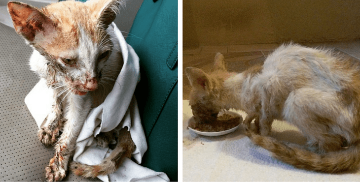

With this project, we hope to clear the streets of roaming animals and animals that are being abused. We mostly target the animals that are looking for a home/ safe haven and people that are willing to take care of the animals and looking for a companion in animal form. We hope that this will help the animals that have no home and for the people that dislike seeing animals on the streets.
I am a student at one of the top schools in Barbados, I really love animals which lead me to create this service for animals that have nowhere to call home/ safe haven. I hated to see animals roaming the streets looking for a place to sleep and something to eat it hurts to see them that way so I decided that would help in my own way even if it didn’t result in much. These animals have been abandoned and abused these videos tells us that there are animals out there in the world suffering.